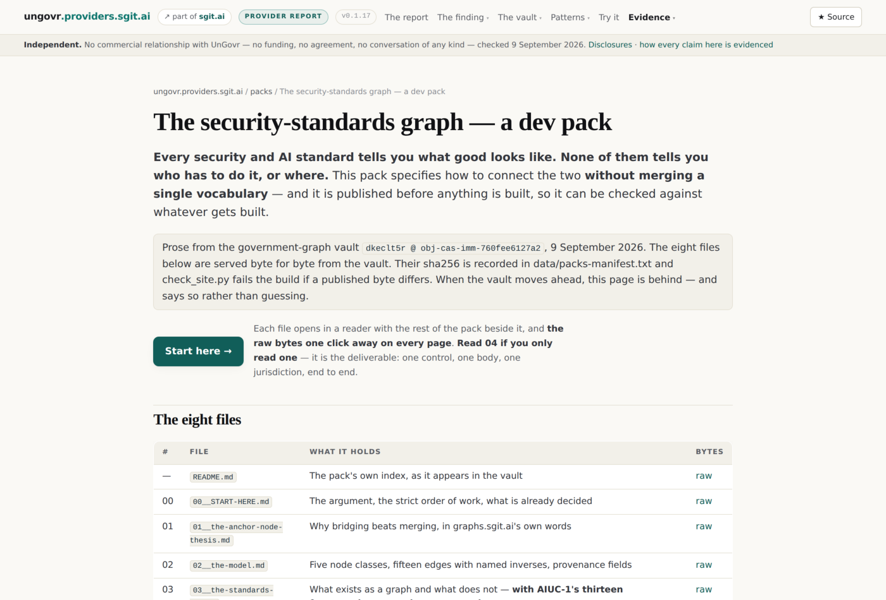
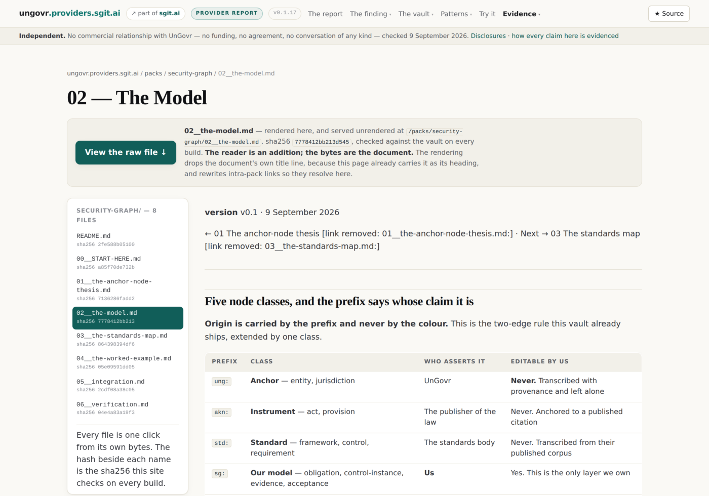
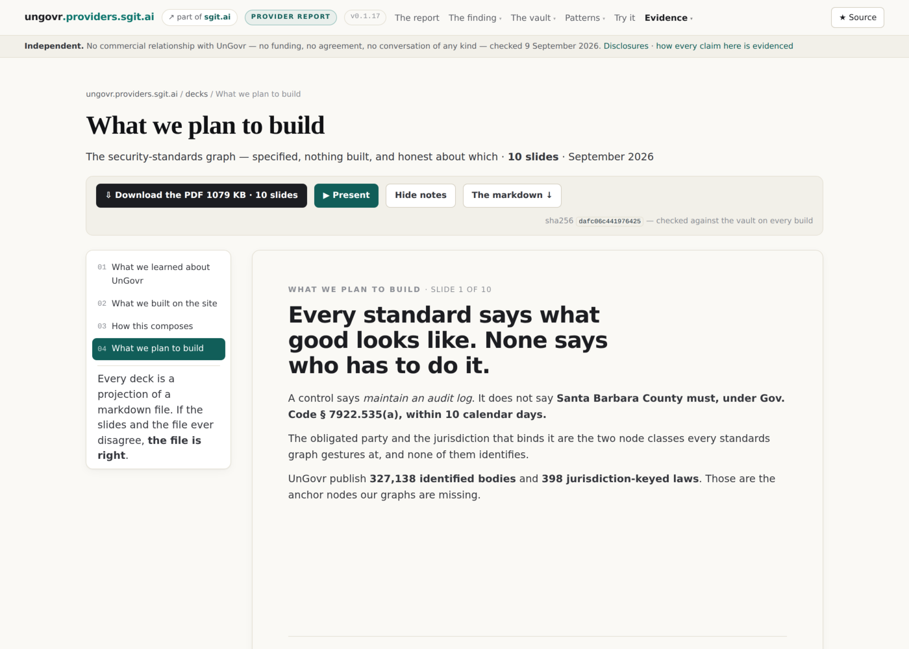
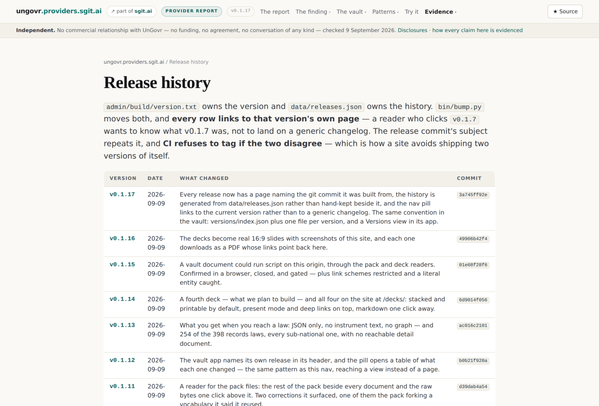
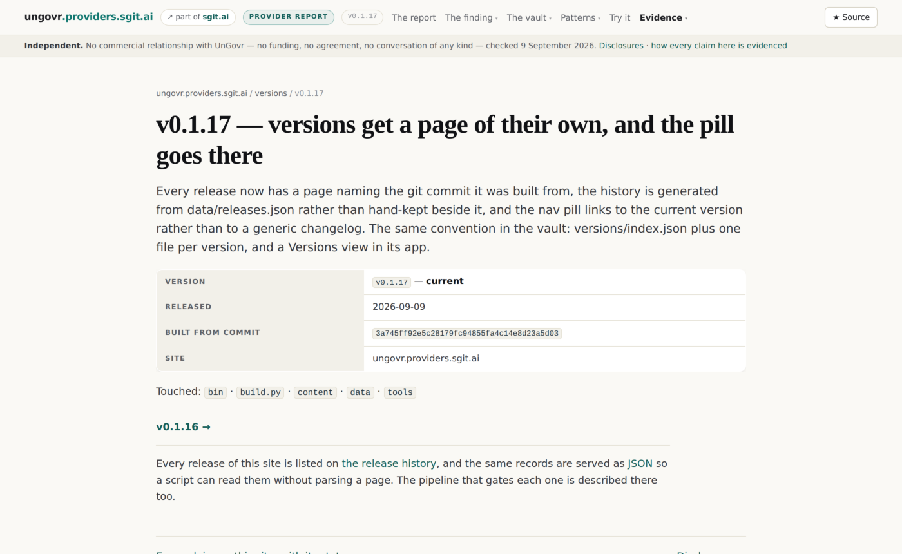
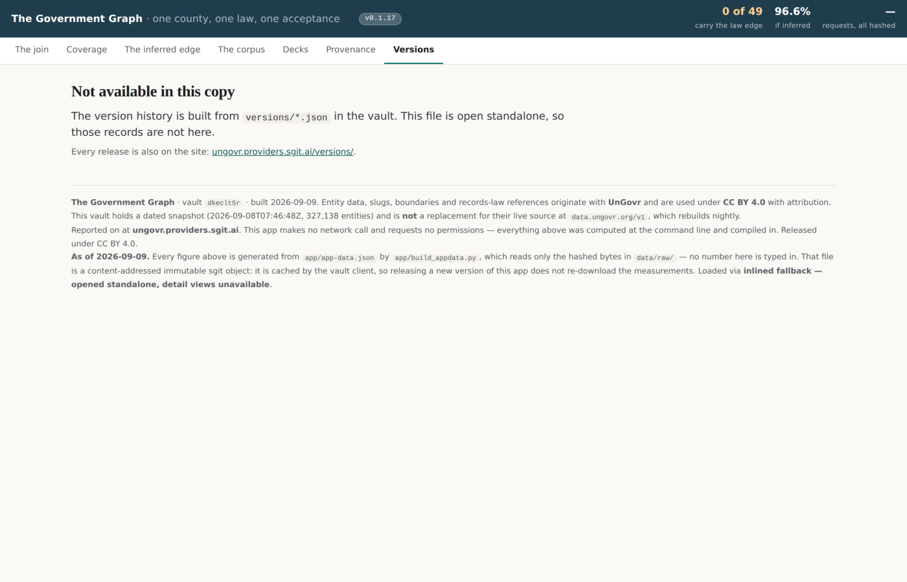
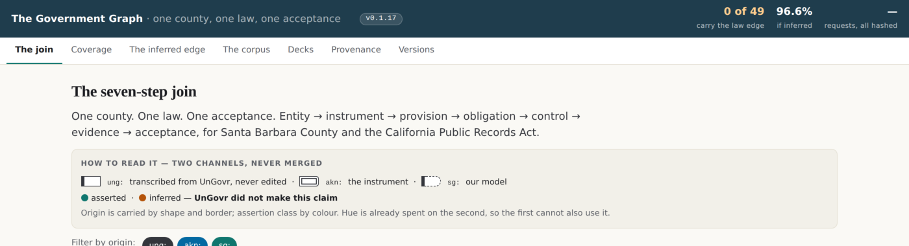

Independent. No commercial relationship with UnGovr
— no funding, no agreement, no conversation of any kind — checked 9 September 2026.
Disclosures · how every claim here is evidenced
Anything rendered stays one click from the bytes it was rendered from. A reader that only shows you its own interpretation is asking to be trusted. One that shows you the bytes is offering to be checked.
That is the estate's rule, not ours. What follows is four places it got applied in a day — a document reader, a slide viewer, a set of PDFs, and a version history — and the three defects that turned up while applying it.
Notes. Open on the principle rather than the feature list. Everything after this is one idea applied four times, and the audience will follow it much better if they hear the idea first.
How this site publishes · slide 2 of 11
The dev pack, published raw — and readable
Eight files from the vault, at /packs/security-graph/, byte for byte and hash-checked on every build.
The reader is the addition: a rail with the whole pack, the document rendered, and the raw bytes named, hashed and linked above the text rather than in a footnote under it.
Every .md URL still serves the file exactly as it always did.

/packs/security-graph/ — eight files from the vault, each linking the bytes it was rendered from.
Notes. The URL somebody tried first was /packs/security-graph/ and it 404'd — the pack was in the vault and nowhere else. That is why this exists.
How this site publishes · slide 3 of 11
The manifest is what makes "byte for byte" a fact
data/packs-manifest.txt records the sha256 of every file. Two paths carry each one — the raw copy, and the markdown twin beside its rendered page — and both are checked.
Edit a published pack file here instead of in the vault and the build stops and names it.
A correction belongs in the vault, where the original lives. Making it here would leave two documents that disagree and no way to say which is the source.

The reader: the pack on the left, the document rendered, the raw file and its sha256 above the text.
Notes. This is the difference between a claim and a check. "Republished byte for byte" is a sentence; a build that refuses to ship when it is not true is a fact.
How this site publishes · slide 4 of 11
The decks: a document first, slides on request
Four decks, 39 slides, written as ordinary markdown in the vault.
Stacked, numbered, notes visible, printable — with JavaScript off it is a document. Present mode, the notes toggle and #s7 deep links are the enhancement, about forty lines.
The site's parser is a port of the vault app's, so both render the same slides from the same bytes.

A deck page: slides stacked and printable, with present mode and the notes toggle on top.
Notes. The brief for this describes a live viewer that reads the vault with a read key through sandboxed frames. We render at build time instead, because this site's claim is that its pages contact nothing and exactly two are allowed to. The cost is liveness, and the page says so.
How this site publishes · slide 5 of 11
And each deck prints to a PDF worth sending
16:9, one slide per page, at the estate's deck geometry. Printed by a browser from the same markup the page renders, so a slide cannot look one way here and another in the file somebody forwards.
Every link in a PDF is absolute. The first run pointed all of them at the localhost the build was printed from — worthless in a file that travels.
Eighteen slides carry a screenshot of this site, each with the URL of the page it shows.
Four decks, each with its PDF, its slide count and the size of the download.
Notes. These PDFs are how most people will meet this work. That makes them a deliverable rather than an export, which is why the geometry, the links and the images are all checked.
How this site publishes · slide 6 of 11
Reaching a law: the finding that earned its own page
Follow the evidence to an instrument and UnGovr hands you a structured summary and a link to the publisher — on 392 of 398 laws, across 339 hosts.
Not the text, in any format. And 254 of the 398 — every sub-national one — have no reachable detail document at all.
Reaching a law: the short answer as a table, with every probe in the retrieval log.
Notes. This page exists because somebody asked a question that could not be answered from the existing pages: what do you actually get when you hit a standard? Fifty probes later, this is the answer, and every one of them is in the retrieval log with its hash.
How this site publishes · slide 7 of 11
Versions get a page of their own
Make it a link, and make the link go to that version's own details — not to a generic changelog. A reader who clicks v0.1.7 wants to know what v0.1.7 was.
sgit.ai/docs/guidance
Eighteen releases, each with a page naming the git commit it was built from. The history is generated from data/releases.json, and served as JSON beside it.

The release history, generated from data/releases.json — every row links to that version's page and names its commit.
Notes. The pill in the nav used to point at /versions/ — the generic changelog the guidance names as the thing not to do. It now points at the current release.
How this site publishes · slide 8 of 11
Seventeen of the eighteen say they were reconstructed
The words are contemporaneous — each release commit's own message, and its row in the old table. The structure around them was assembled afterwards.
Say when a version is reconstructed rather than recorded. A history assembled after the fact is still useful, but only if it is labelled.
So it is labelled, and each entry names what it was assembled from.

One release's own page: the commit it was built from, what it touched, and that it was reconstructed.
Notes. The temptation is to present a tidy history as though it had always been kept. The label costs nothing and is the difference between a record and a reconstruction.
How this site publishes · slide 9 of 11
The same convention inside the vault
versions/index.json plus one file per version — data, so an agent can read the history without running anything.
The app gained a Versions view rendered from those files, and the header pill opens it at the current release.
The hand-kept release array in the app source is gone. The files are the source.

The vault app's Versions view, rendered from versions/*.json — the pill in the header opens it here.
Notes. Ten records, nine reconstructed. Same discipline as the site, one layer down. The AIUC-1 conformance vault is the reference implementation for this shape and we followed it rather than inventing one.
How this site publishes · slide 10 of 11
A commit cannot contain its own hash
The workflow was: commit, record the sha, amend. The amend changes the sha. Record that one and amend again, and it changes again. It does not converge.
So the sha lands in the following commit, and two things stop "later" becoming "never": the gate requires a commit on every release but the newest, and bin/bump.py refuses to move on while the current one is blank.

The pill sits in the app's chrome, not a footer, and reaches the current release rather than a list.
Notes. Found by running the workflow and watching the recorded sha and git rev-parse HEAD disagree — then noticing that fixing it once would not fix it twice. It is written on the versions page rather than left as a quirk somebody rediscovers.
How this site publishes · slide 11 of 11
Four features, one shape
| The reader | shows the bytes it rendered | | The slides | are a projection of a file that stays readable | | The PDFs | are printed from the markup the page shows | | The versions | name the commit they were built from |
None of it is a promise. All of it is a check — which is the next deck.
The report the four mechanisms serve — every claim carrying the state it earned.
Notes. Close by naming the through-line. Each of these could have been done in a way that asked to be trusted; each was instead done in a way that can be checked, and the checking is what deck 6 is about.
These slides are rendered from 05__how-this-publishes.md, republished byte for byte from the vault. The live decks — the same file, parsed by the vault's own app — are in the Decks view of the vault, which moves the moment the vault does. This page moves when the site rebuilds.